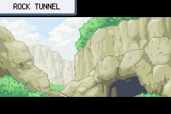
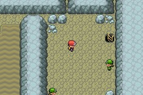

บทที่ 9 / 29
ถ้ำอุโมงค์หิน<Rock Tunnel>
❖


ให้เราติดHM05กับโปเกมอนตัวใดตัวหนึ่ง เพื่อเพิ่มความสว่างภายในถ้ำ ภายในมีเทรนเนอร์มากมาย และมีเด็กผู้ชายคนหนึ่งสอนท่า Rock Slide ให้เรา ให้เราเดินหาทางออก โดยทางออกจะอยู่ที่ชิออนทาวน์